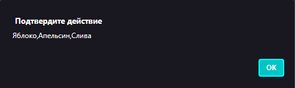

6.1 Создание массивов
Массив – это особый тип объекта, предназначенный для работы с упорядоченным набором элементов, для хранения упорядоченных коллекций или особой структуры данных. В массиве так же могут храниться элементы любого типа. Не стоит забывать, что элементы массива нумеруются, начиная с нуля.
Вариант синтаксиса для создания массива:
let arr = ["1", "2", "3"]; |
На примере выше объявится массив из простых чисел. Чтобы вывести весь массив либо отдельные элементы массива, необходимо просто использовать функцию "alert":
let arr = ['1', '2', '3']; alert(arr); //чтобы вывести весь массив alert(arr[1]);//Чтобы вывести отдельный элемент. //массив начинает отсчет с нуля, поэтому выведет "2"
Теперь попробуйте создать простой массив, затем осуществите вывод массива
Пример выполнения:

Сохраните файл в вашей личной папке
Многомерные массивы
Массивы могут содержать элементы, которые тоже являются массивами. Это можно использовать для создания многомерных массивов, например, для хранения матриц:
let matrix = [ [1, 2, 3], [4, 5, 6], [7, 8, 9] ]; alert( matrix[1][1] ); // 5, центральный элемент
Сохраните файл в вашей личной папке